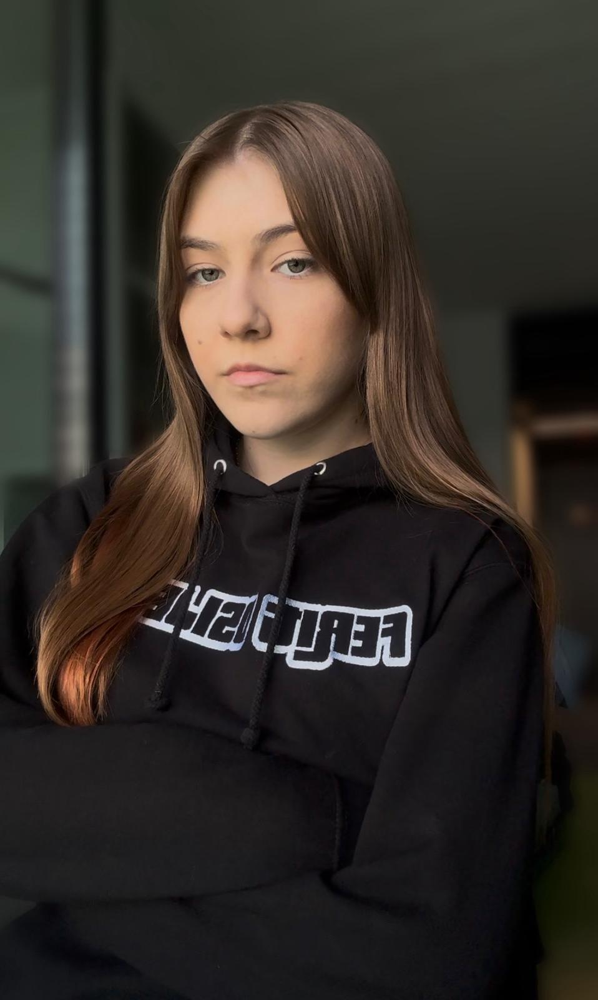

PORTFOLIO
────────────────────────────
PREDSTAVLJANJE POSLODAVCUOva web stranica predstavlja osobni portfolio izrađen s ciljem predstavljanja potencijalnim poslodavcima. Pomoću osnovnih informacija o obrazovanju, vještinama i interesima, želim istaknuti svoju motivaciju, znanje i spremnost za rad u struci.
Student računarstva | UI/UX Enthusiast
SARA ŠAJKOVSKI
Studentica usmjerena na frontend development i UI/UX dizajn, s fokusom na izradu modernih i korisnički
prilagođenih web rješenja.
